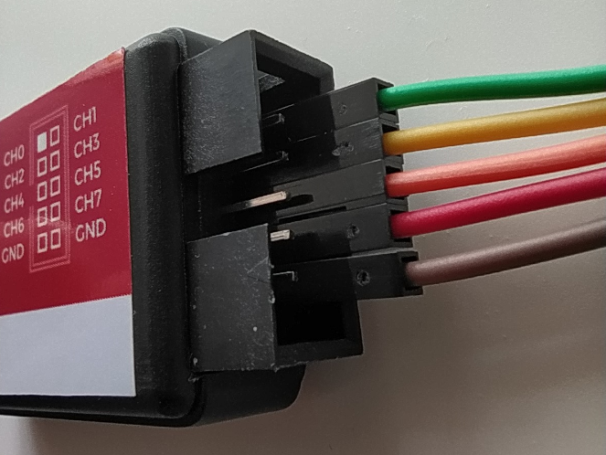
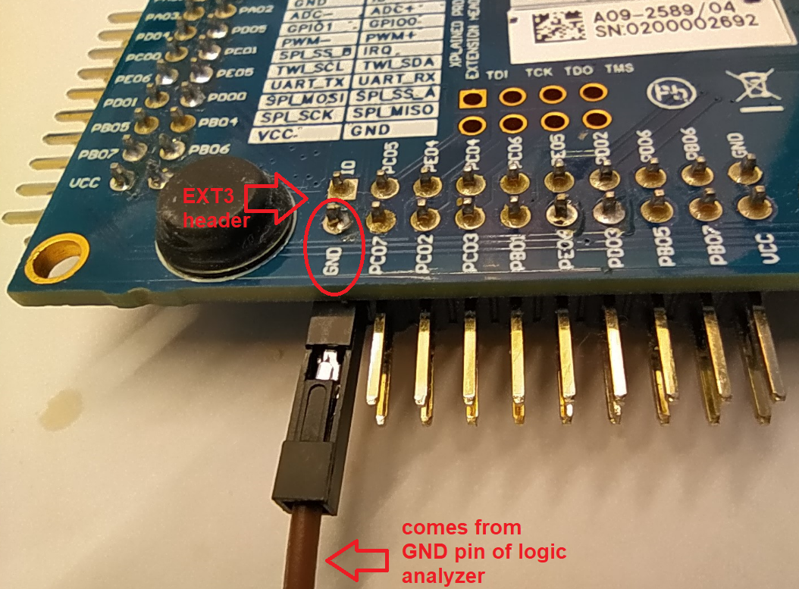
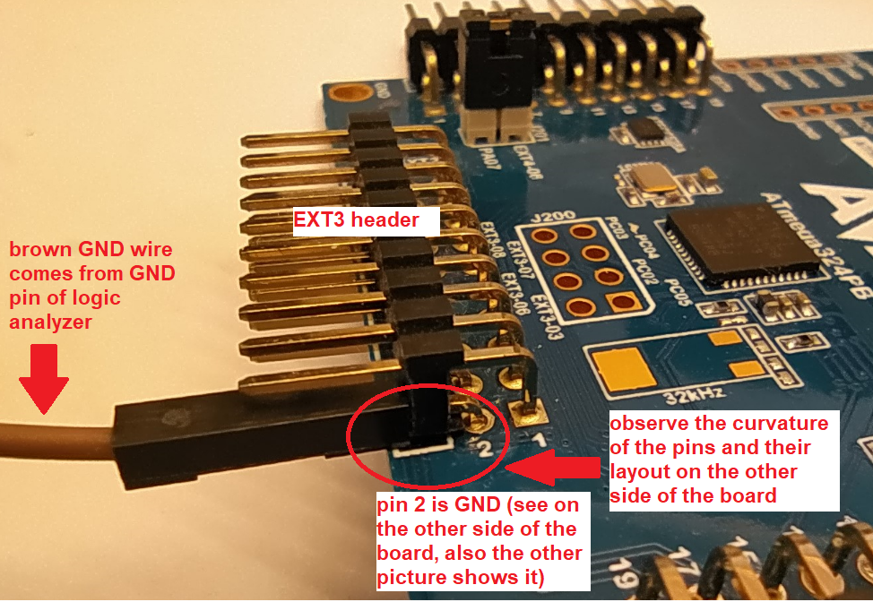
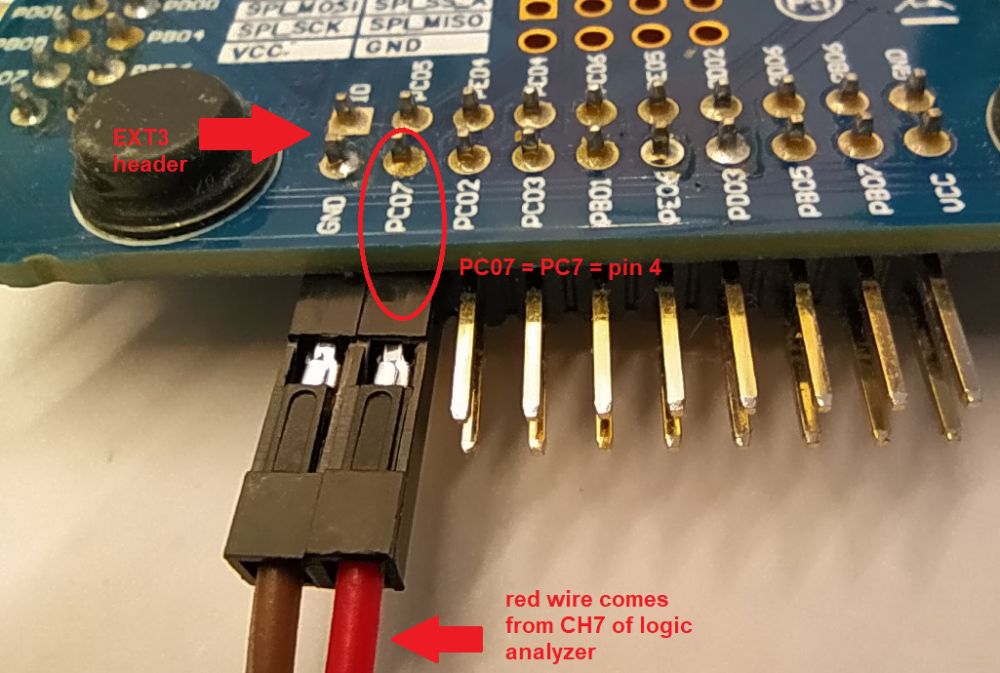
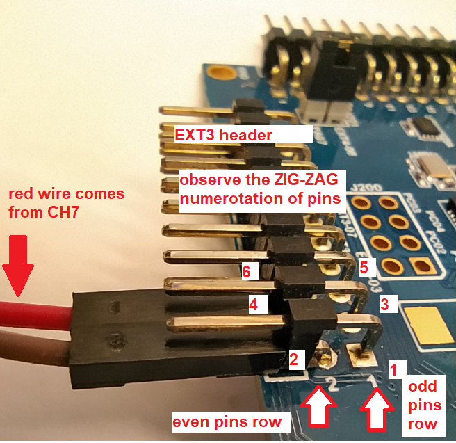

- Generated by
 1.17.0
1.17.0
|
DEAC_STEFAN_MARQ 1.0.0
|

Use only odd channels: CH1, CH3, CH5, CH7.
Color legend:
The odd channels are on the bottom pin row (as shown in the picture above).
For details about the analyzer model, see USB Logic Analyzer - 24MHz/8-Channel - SparkFun Electronics.
Ground (GND) wire must be connected to a GND pin on the main development board.
For this setup, use pin 2 (GND) from EXT3 header because this header is left open/unplugged.
Back view:

Front view:

LED0 is connected to pin PC7. One logic analyzer channel must be connected to this pin to record the electrical signal applied to LED0.
Reference mapping from the guide: pin PC7 = PC07 = pin 4.
Back view:

Front view:

Read and follow this guide to install and use PulseView:
Using the USB Logic Analyzer with sigrok PulseView - SparkFun Learn